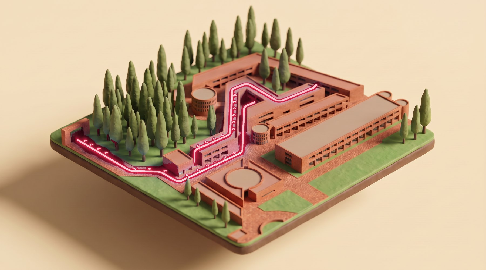
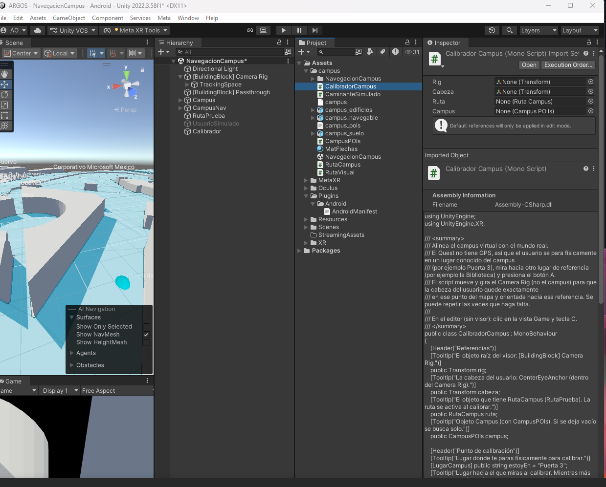

01 // El mapa
Argos Ibero.
Navegación en realidad mixta para la Universidad Iberoamericana. Elige a dónde vas y Argos traza la ruta más corta por el campus.
01 // El mapa
Navegación en realidad mixta para la Universidad Iberoamericana. Elige a dónde vas y Argos traza la ruta más corta por el campus.
02 // Puerta 3
Escanea el código QR del punto donde estás o elige tu origen en la lista. Argos te ubica en el mapa del campus.
03 // Pasillo poniente
Flechas animadas sobre la cámara te guían paso a paso, nodo por nodo, por la ruta más corta.
04 // Salón C
De Puerta 3 a Salón C: la misma ruta que calcula la app, ahora en tu mano.
Campus en 3D
Los edificios salen de OpenStreetMap, con su altura real cuando el mapa la tiene (10 de 21 en la Ibero). Encima, la misma ruta que calcula Argos: de Puerta 3 a Salón C, con las flechas que ves en la app.
Datos © colaboradores de OpenStreetMap
La misma ruta que calcula Argos, recorrida a pie: la avenida de los árboles, la explanada techada, los pasillos de columnas y el túnel de arcos.
Argos te guía por la Universidad Iberoamericana con flechas sobre la cámara de tu celular: eliges a dónde vas y la app traza la ruta más corta.
Acerca del Proyecto
Argos es un sistema avanzado de navegación espacial desarrollado específicamente para la Universidad Iberoamericana. Utilizando el poder de la Realidad Mixta a través de los visores Meta Quest 3S, Argos permite a los usuarios encontrar la ruta más óptima hacia cualquier punto de interés dentro del campus, superando las limitaciones de precisión del GPS tradicional en interiores.
Traza rutas óptimas sin depender del GPS tradicional en interiores.
Hand tracking y Passthrough para mantener el contexto del entorno real.
Modelos 3D del campus a partir de datos espaciales y OpenStreetMap.

Características
Integración de datos espaciales extraídos de OpenStreetMap para generar modelos 3D exactos del campus, abarcando puntos clave como la Biblioteca, La Karpa y los accesos principales.
Implementación de algoritmos de búsqueda de rutas y NavMesh para trazar el camino más corto, esquivando obstáculos de manera dinámica en tiempo real.
Interfaz holográfica anclada al espacio real (World Space) que se controla de forma natural mediante el rastreo de manos (Hand Tracking), permitiendo al usuario no perder de vista su entorno físico gracias a la tecnología Passthrough.
Prácticas
Práctica 1
Exploramos cómo los objetos participan en la simulación física de Unity configurando un plano base y soltando objetos para analizar la masa, la gravedad y la resistencia en la caída.
Práctica 2
Programamos la detección de colisiones mediante el evento OnCollisionEnter y evaluamos el comportamiento físico comparando los métodos de detección Discrete y Continuous.
Práctica 3
Introducción a la programación orientada a objetos en C#. Desarrollamos un cañón virtual creando instancias de balas físicas con Rigidbody, las cuales se autodestruyen mediante código tras unos segundos para optimizar la memoria.
Práctica 4
Creamos una interfaz gráfica sobre la pantalla mediante un Canvas, utilizando elementos TextMeshPro para crear un contador de munición y botones interactivos que accionan el disparo.
Práctica 5
Estructuramos el flujo del proyecto conectando diferentes niveles. Utilizamos el SceneManager y asignamos funciones de cambio de escena a los eventos OnClick de los botones en la interfaz.
Práctica 6
Integramos comunicación en tiempo real usando el protocolo MQTT en Unity. Desarrollamos interacciones de Realidad Mixta para cambiar el color de figuras y enviamos/recibimos comandos desde una placa ESP32 para controlar un carro omnidireccional.
Tecnología
Construido con herramientas líderes en la industria para el desarrollo espacial: Unity 3D, programación orientada a objetos en C#, procesamiento de datos JSON/XML y el Meta XR SDK.
Visión
Argos transforma la manera en que los usuarios exploran espacios interiores, integrando información espacial, rutas inteligentes y experiencias inmersivas en una sola capa de navegación.
Contactar
¿Quieres ver una demo o colaborar?